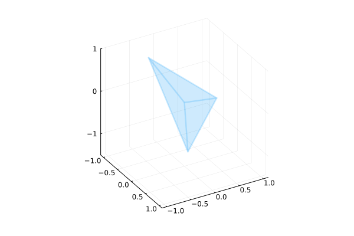

Simple semidefinite programming examples
This tutorial was generated using Literate.jl. Download the source as a .jl file.
This tutorial is a collection of small conic programs from the field of semidefinite programming, including the max-cut relaxation, max-satisfiability, and the Lovász theta number of a graph.
Learning intentions:
- Formulate the SDP relaxation of the maximum cut problem using the graph Laplacian, and round the SDP solution to a feasible cut
- Model a variety of problems—low-rank matrix completion, k-means clustering, correlation bounds, and minimum metric distortion—as semidefinite programs
- Compute the Lovász theta number of a graph as an SDP and use it to bound the clique number and chromatic number
Required packages
This tutorial uses the following packages:
using JuMPimport Clarabelimport LinearAlgebraimport Plotsimport Randomimport TestMaximum cut via SDP
The maximum cut problem is a classical example in graph theory, where we seek to partition a graph into two complementary sets, such that the weight of edges between the two sets is maximized. This problem is NP-hard, but it is possible to obtain an approximate solution using the semidefinite programming relaxation:
\[ \text{max} \quad 0.25 L•X \\ \text{ s.t.} \quad \mathrm{diag}(X) = e \\ \qquad X \succeq 0\]
where $L$ is the weighted graph Laplacian and $e$ is a vector of ones. For more details, see (Goemans and Williamson, 1995).
""" svd_cholesky(X::AbstractMatrix, rtol)Return the matrix `U` of the Cholesky decomposition of `X` as `U' * U`.Note that we do not use the `LinearAlgebra.cholesky` function because itrequires the matrix to be positive definite while `X` may be onlypositive *semi*definite.We use the convention `U' * U` instead of `U * U'` to be consistent with`LinearAlgebra.cholesky`."""function svd_cholesky(X::AbstractMatrix) F = LinearAlgebra.svd(X) # We now have `X ≈ `F.U * D² * F.U'` where: D = LinearAlgebra.Diagonal(sqrt.(F.S)) # So `X ≈ U' * U` where `U` is: return (F.U * D)'endfunction solve_max_cut_sdp(weights) N = size(weights, 1) # Calculate the (weighted) Laplacian of the graph: L = D - W. L = LinearAlgebra.Diagonal(weights * ones(N)) - weights model = Model(Clarabel.Optimizer) set_silent(model) @variable(model, X[1:N, 1:N], PSD) for i in 1:N set_start_value(X[i, i], 1.0) end @objective(model, Max, 0.25 * LinearAlgebra.dot(L, X)) @constraint(model, LinearAlgebra.diag(X) .== 1) optimize!(model) assert_is_solved_and_feasible(model) V = svd_cholesky(value(X)) Random.seed!(N) r = rand(N) r /= LinearAlgebra.norm(r) cut = [LinearAlgebra.dot(r, V[:, i]) > 0 for i in 1:N] S = findall(cut) T = findall(.!cut) println("Solution:") println(" (S, T) = ({", join(S, ", "), "}, {", join(T, ", "), "})") return S, Tendsolve_max_cut_sdp (generic function with 1 method)Given the graph
[1] --- 5 --- [2]The solution is (S, T) = ({1}, {2})
S, T = solve_max_cut_sdp([0 5; 5 0])([2], [1])Given the graph
[1] --- 5 --- [2]
| \ |
| \ |
7 6 1
| \ |
| \ |
[3] --- 1 --- [4]The solution is (S, T) = ({1}, {2, 3, 4})
S, T = solve_max_cut_sdp([0 5 7 6; 5 0 0 1; 7 0 0 1; 6 1 1 0])([1], [2, 3, 4])Given the graph
[1] --- 1 --- [2]
| |
| |
5 9
| |
| |
[3] --- 2 --- [4]The solution is (S, T) = ({1, 4}, {2, 3})
S, T = solve_max_cut_sdp([0 1 5 0; 1 0 0 9; 5 0 0 2; 0 9 2 0])([1, 4], [2, 3])Low-rank matrix completion
The matrix completion problem seeks to find the missing entries of a matrix with a given (possibly random) subset of fixed entries, such that the completed matrix has the lowest attainable rank.
For more details, see (Recht et al., 2010).
function example_matrix_completion(; svdtol = 1e-6) rng = Random.MersenneTwister(1234) n = 20 mask = rand(rng, 1:25, n, n) .== 1 B = randn(rng, n, n) model = Model(Clarabel.Optimizer) @variable(model, X[1:n, 1:n]) @constraint(model, X[mask] .== B[mask]) @variable(model, t) @constraint(model, [t; vec(X)] in MOI.NormNuclearCone(n, n)) @objective(model, Min, t) optimize!(model) assert_is_solved_and_feasible(model) # Return the approximate rank of the completed matrix to a given tolerance: return sum(LinearAlgebra.svdvals(value.(X)) .> svdtol)endexample_matrix_completion()9K-means clustering via SDP
Given a set of points $a_1, \ldots, a_m$ in $\mathbb{R}^n$, allocate them to $k$ clusters.
For more details, see (Peng and Wei, 2007).
function example_k_means_clustering() a = [[2.0, 2.0], [2.5, 2.1], [7.0, 7.0], [2.2, 2.3], [6.8, 7.0], [7.2, 7.5]] m = length(a) num_clusters = 2 W = zeros(m, m) for i in 1:m, j in (i+1):m W[i, j] = W[j, i] = exp(-LinearAlgebra.norm(a[i] - a[j]) / 1.0) end model = Model(Clarabel.Optimizer) set_silent(model) @variable(model, Z[1:m, 1:m] >= 0, PSD) @objective(model, Min, LinearAlgebra.tr(W * (LinearAlgebra.I - Z))) @constraint(model, [i = 1:m], sum(Z[i, :]) .== 1) @constraint(model, LinearAlgebra.tr(Z) == num_clusters) optimize!(model) assert_is_solved_and_feasible(model) Z_val = value.(Z) current_cluster, visited = 0, Set{Int}() solution = [1, 1, 2, 1, 2, 2] for i in 1:m if !(i in visited) current_cluster += 1 println("Cluster $current_cluster") for j in i:m if isapprox(Z_val[i, i], Z_val[i, j]; atol = 1e-3) println(a[j]) push!(visited, j) Test.@test solution[j] == current_cluster end end end end returnendexample_k_means_clustering()Cluster 1
[2.0, 2.0]
[2.5, 2.1]
[2.2, 2.3]
Cluster 2
[7.0, 7.0]
[6.8, 7.0]
[7.2, 7.5]The correlation problem
Given three random variables $A$, $B$, and $C$, and given bounds on two of the three correlation coefficients:
\[ -0.2 \leq ρ_{AB} \leq -0.1 \\ 0.4 \leq ρ_{BC} \leq 0.5\]
our problem is to determine upper and lower bounds on other correlation coefficient $ρ_{AC}$.
We solve an SDP to make use of the following positive semidefinite property of the correlation matrix:
\[\begin{bmatrix} 1 & ρ_{AB} & ρ_{AC} \\ ρ_{AB} & 1 & ρ_{BC} \\ ρ_{AC} & ρ_{BC} & 1 \end{bmatrix} \succeq 0\]
function example_correlation_problem() model = Model(Clarabel.Optimizer) set_silent(model) @variable(model, X[1:3, 1:3], PSD) S = ["A", "B", "C"] ρ = Containers.DenseAxisArray(X, S, S) @constraint(model, [i in S], ρ[i, i] == 1) @constraint(model, -0.2 <= ρ["A", "B"] <= -0.1) @constraint(model, 0.4 <= ρ["B", "C"] <= 0.5) @objective(model, Max, ρ["A", "C"]) optimize!(model) assert_is_solved_and_feasible(model) println("An upper bound for ρ_AC is $(value(ρ["A", "C"]))") Test.@test value(ρ["A", "C"]) ≈ 0.87195 atol = 1e-4 @objective(model, Min, ρ["A", "C"]) optimize!(model) assert_is_solved_and_feasible(model) println("A lower bound for ρ_AC is $(value(ρ["A", "C"]))") Test.@test value(ρ["A", "C"]) ≈ -0.978 atol = 1e-3 returnendexample_correlation_problem()An upper bound for ρ_AC is 0.8719210444233101
A lower bound for ρ_AC is -0.9779977554375527The minimum distortion problem
This example arises from computational geometry, in particular the problem of embedding a general finite metric space into a Euclidean space.
It is known that the 4-point metric space defined by the star graph
[1]
\
1
\
[0] —- 1 -- [2]
/
1
/
[3]cannot be exactly embedded into a Euclidean space of any dimension, where distances are computed by length of the shortest path between vertices. A distance-preserving embedding would require the three leaf nodes to form an equilateral triangle of side length 2, with the centre node (0) mapped to an equidistant point at distance 1; this is impossible since the triangle inequality in Euclidean space implies all points would need to be simultaneously collinear.
Here we will formulate and solve an SDP to compute the best possible embedding, that is, the embedding $f$ assigning each vertex $v$ to a vector $f(v)$ that minimizes the distortion $c$ such that
\[ D[a, b] \leq ||f(a) - f(b)|| \leq c \; D[a, b]\]
for all edges $(a, b)$ in the graph, where $D[a, b]$ is the distance in the graph metric space.
Any embedding $f$ can be characterized by a Gram matrix $Q$, which is PSD and such that
\[ ||f(a) - f(b)||^2 = Q[a, a] + Q[b, b] - 2 Q[a, b]\]
The matrix entry $Q[a,b]$ represents the inner product of $f(a)$ with $f(b)$.
We therefore impose the constraint
\[ D[a, b]^2 \leq Q[a, a] + Q[b, b] - 2 Q[a, b] \leq c^2 \; D[a, b]^2\]
for all edges $(a, b)$ in the graph and minimize $c^2$, which gives us the SDP formulation below. Since we may choose any point to be the origin, we fix the first vertex at 0.
For more details, see (Matoušek, 2013; Linial, 2002).
function example_minimum_distortion() model = Model(Clarabel.Optimizer) set_silent(model) D = [ 0.0 1.0 1.0 1.0 1.0 0.0 2.0 2.0 1.0 2.0 0.0 2.0 1.0 2.0 2.0 0.0 ] @variable(model, c² >= 1.0) @variable(model, Q[1:4, 1:4], PSD) for i in 1:4, j in (i+1):4 @constraint(model, D[i, j]^2 <= Q[i, i] + Q[j, j] - 2 * Q[i, j]) @constraint(model, Q[i, i] + Q[j, j] - 2 * Q[i, j] <= c² * D[i, j]^2) end fix(Q[1, 1], 0) @objective(model, Min, c²) optimize!(model) assert_is_solved_and_feasible(model) Test.@test objective_value(model) ≈ 4 / 3 atol = 1e-4 # Recover the minimal distorted embedding: X = [zeros(3) sqrt(value.(Q)[2:end, 2:end])] return Plots.plot( X[1, :], X[2, :], X[3, :]; seriestype = :mesh3d, connections = ([0, 0, 0, 1], [1, 2, 3, 2], [2, 3, 1, 3]), legend = false, fillalpha = 0.1, lw = 3, ratio = :equal, xlim = (-1.1, 1.1), ylim = (-1.1, 1.1), zlim = (-1.5, 1.0), zticks = -1:1, camera = (60, 30), )endexample_minimum_distortion()
Lovász numbers
The Lovász number of a graph, also known as Lovász's theta-function, is a number that lies between two important and related numbers that are computationally hard to determine, namely the chromatic and clique numbers of the graph. It is possible however to efficient compute the Lovász number as the optimal value of a semidefinite program.
Consider the pentagon graph:
[5]
/ \
/ \
[1] [4]
| |
| |
[2] --- [3]with five vertices and edges. Its Lovász number is known to be precisely $\sqrt{5} \approx 2.236$, lying between 2 (the largest clique size) and 3 (the smallest number needed for a vertex coloring).
Let $i, \, j$ be integers such that $1 \leq i < j \leq 5$. We define $A^{ij}$ to be the $5 \times 5$ symmetric matrix with entries $(i,j)$ and $(j,i)$ equal to 1, with all other entries 0. Let $E$ be the graph's edge set; in this example, $E$ contains (1,2), (2,3), (3,4), (4,5), (5,1) and their transposes. The Lovász number can be computed from the program
\[\begin{align} \text{max} & \quad J • X & \\ \text{ s.t.} & \quad A^{ij} • X = 0 \text{ for all } (i,j) \notin E \\ & \quad I • X = 1 \\ & \quad X \succeq 0 \end{align}\]
where $J$ is the matrix filled with ones, and $I$ is the identity matrix.
For more details, see (Barvinok, 2002; Knuth, 1994).
function example_theta_problem() model = Model(Clarabel.Optimizer) set_silent(model) E = [(1, 2), (2, 3), (3, 4), (4, 5), (5, 1)] @variable(model, X[1:5, 1:5], PSD) for i in 1:5 for j in (i+1):5 if !((i, j) in E || (j, i) in E) A = zeros(Int, 5, 5) A[i, j] = 1 A[j, i] = 1 @constraint(model, LinearAlgebra.dot(A, X) == 0) end end end @constraint(model, LinearAlgebra.tr(LinearAlgebra.I * X) == 1) J = ones(Int, 5, 5) @objective(model, Max, LinearAlgebra.dot(J, X)) optimize!(model) assert_is_solved_and_feasible(model) Test.@test objective_value(model) ≈ sqrt(5) rtol = 1e-4 println("The Lovász number is: $(objective_value(model))") returnendexample_theta_problem()The Lovász number is: 2.2360679790987565Robust uncertainty sets
This example computes the Value at Risk for a data-driven uncertainty set. Closed-form expressions for the optimal value are available. For more details, see (Bertsimas et al., 2018).
function example_robust_uncertainty_sets() R, d, 𝛿, ɛ = 1, 3, 0.05, 0.05 N = ceil((2 + 2 * log(2 / 𝛿))^2) + 1 c, μhat, M = randn(d), rand(d), rand(d, d) Σhat = 1 / (d - 1) * (M - ones(d) * μhat')' * (M - ones(d) * μhat') Γ1(𝛿, N) = R / sqrt(N) * (2 + sqrt(2 * log(1 / 𝛿))) Γ2(𝛿, N) = 2 * R^2 / sqrt(N) * (2 + sqrt(2 * log(2 / 𝛿))) model = Model(Clarabel.Optimizer) set_silent(model) @variable(model, Σ[1:d, 1:d], PSD) @variable(model, u[1:d]) @variable(model, μ[1:d]) @constraint(model, [Γ1(𝛿 / 2, N); μ - μhat] in SecondOrderCone()) @constraint(model, [Γ2(𝛿 / 2, N); vec(Σ - Σhat)] in SecondOrderCone()) @constraint(model, [((1-ɛ)/ɛ) (u - μ)'; (u-μ) Σ] >= 0, PSDCone()) @objective(model, Max, c' * u) optimize!(model) assert_is_solved_and_feasible(model) exact = μhat' * c + Γ1(𝛿 / 2, N) * LinearAlgebra.norm(c) + sqrt((1 - ɛ) / ɛ) * sqrt(c' * (Σhat + Γ2(𝛿 / 2, N) * LinearAlgebra.I) * c) Test.@test objective_value(model) ≈ exact atol = 1e-2 returnendexample_robust_uncertainty_sets()